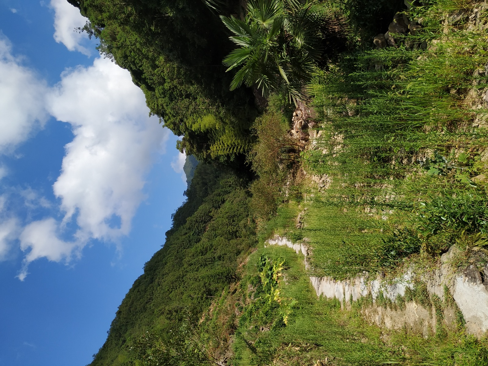
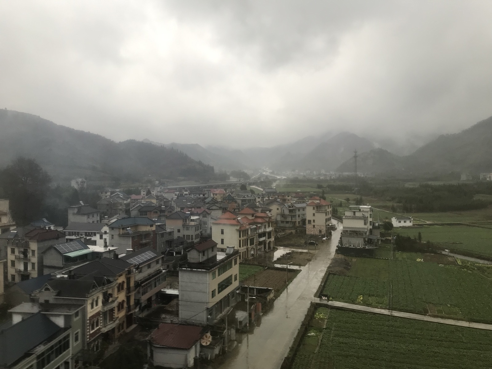
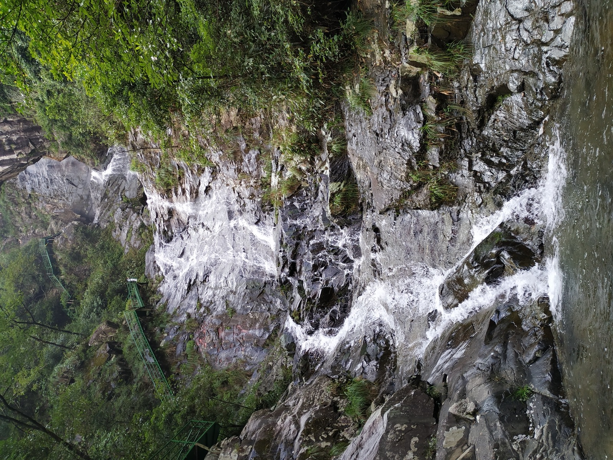
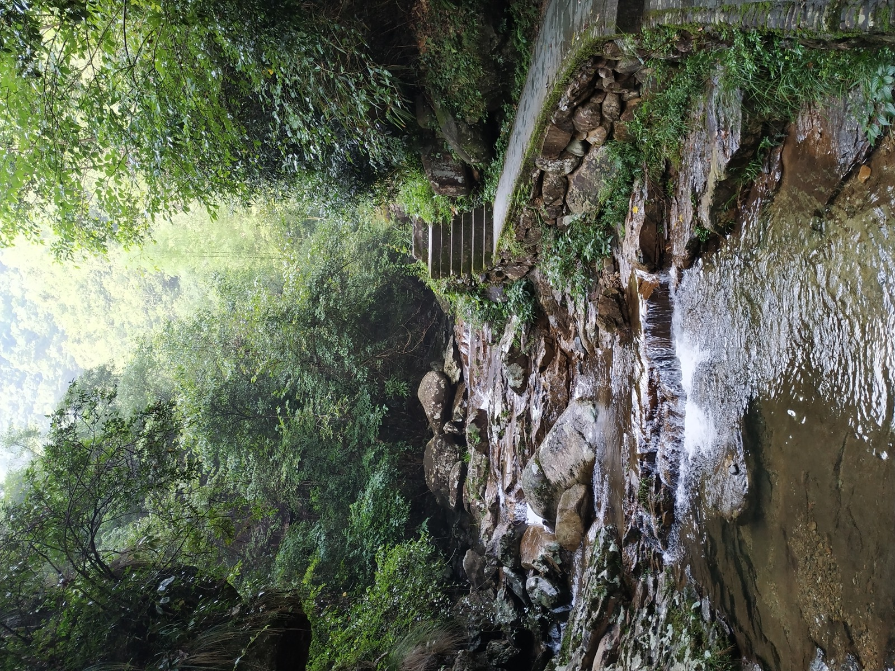
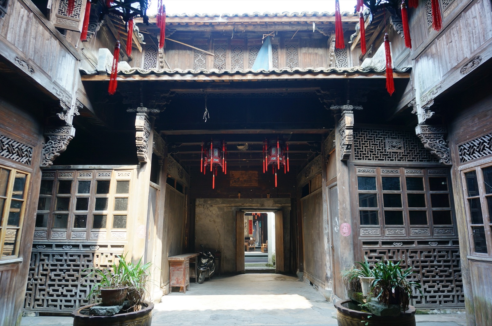
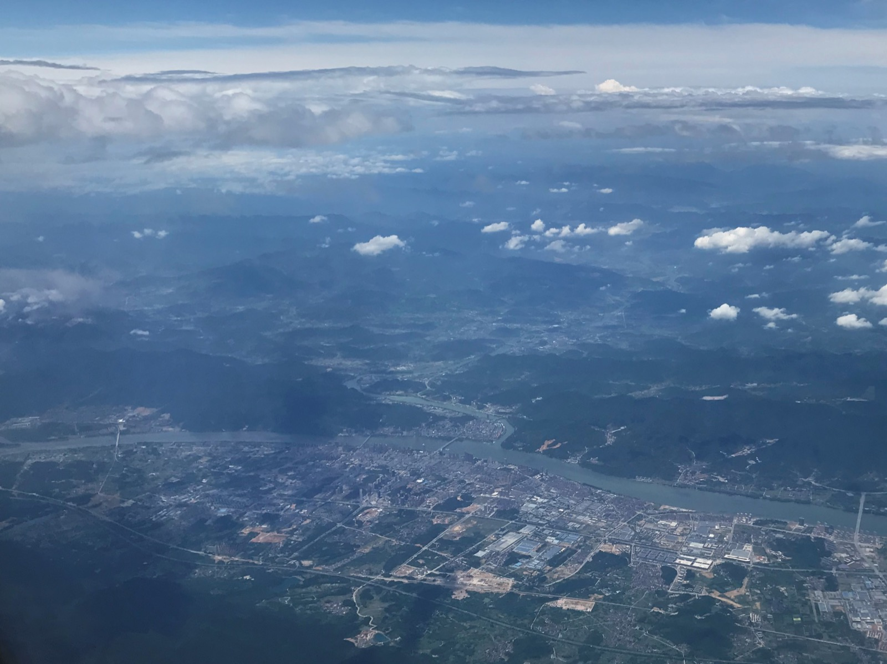

D1 · 4月30日 杭州 → 开化
到达适应日，不赶景点，先把住宿和吃饭安排顺。
开化落脚
天气：多云9°C - 23°C降雨概率约 19%
主线杭州出发，车程约 3.5 小时，建议下午前后到开化县城或马金溪一带入住。
穿什么早晚偏凉，短袖加薄外套最稳，车里放一件轻冲锋衣。
当天提醒第一天不要再硬塞古村，重点是早点入住、吃顿顺口的晚饭，顺手买好第二天路上的水和零食。
杭州出发，先住开化，再转龙游和桐庐。这个版本适合直接发给家里人打开，每一天都放了对应实景图，也把天气、穿什么、当天提醒一起写进去了。
每张卡片都把当天主线、天气、穿戴建议和提醒写在一起，手机上往下滑着看就行。

到达适应日，不赶景点，先把住宿和吃饭安排顺。

开化段第一整天，重点放在人文和慢逛，不追求走很多。

这是开化段最像真正进山的一天，景色最好，也最看天气。

和前两天明显不同，这天看的是更小众、更山野的长虹乡村线。
中午到衢州吃饭轻逛，下午去龙游石窟，傍晚住龙游。

主玩深澳古村，补荻浦村、环溪村，看古水系、宗祠、老宅、老街、田园和村落生活。

上午走溪谷精华段，按时间和体力决定要不要补芦茨。
上午去富春江边收尾，下午回杭州，不再把最后一天排太满。
天气口径：以上温度和降雨概率来自 Open-Meteo，对应开化、龙游、桐庐坐标，查询时间为 2026-04-25。山里天气变化快，出发前请再看一眼最新预报。
下面这张图会把整趟自驾主线和主要落脚点连起来。点任意圆点，可以看当天重点和对应停靠点，还能跳到高德定位。
说明：路线由公开 OSRM 驾车服务动态生成，底图来自 OpenStreetMap。若外部路线服务临时波动，页面会自动退回到点位连线显示。